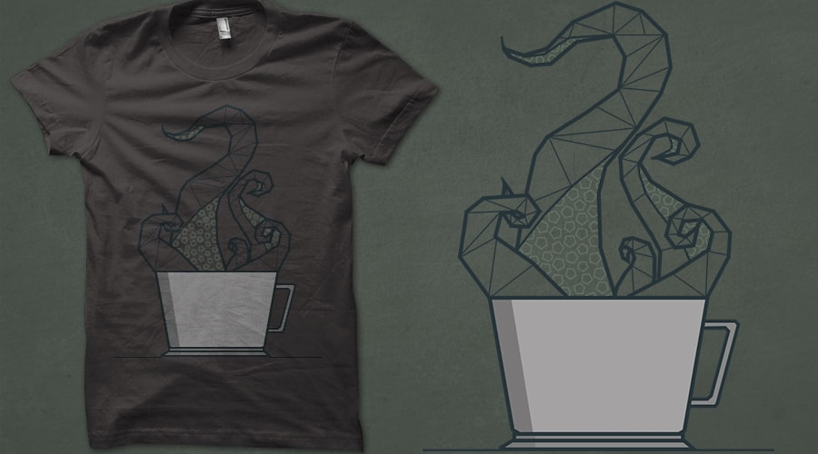

"Cthulhuccino"
T-shirt design

This design combines two of my favourite things, gothic literature and a good cup of coffee! The idea behind this geometric design was to create something from only straight lines which represented something curved, delicate or flowy in order to try to challenge myself. For me, combining the rising steam of a cup of coffee and flowing tentacles with harsh straight lines provided me with an opportunity to challenge myself while also paying tribute to a literary legend whose work I have really enjoyed.
I made a mock up of what my design would look like on a t-shirt as I would really like to hand screen print this design onto clothing soon.